|
Welcome to the
Paratext Diagram Labeler
Beta
Test Program.
Windows | Linux | Mac
|
Beta Software Notices
If you didn’t already sign up for the beta test program, please do so now by sending
an email to
labeler+subscribe@groups.sall.com, and
then click the confirm link in the email you receive in reply.
As this is beta software and primarily intended to test the user experience for integration
into Paratext 10:
-
Don’t expect a patch system. Upgrading to the latest version means downloading the
installer again and running it replace your previous version.
-
The app is under active development, and the underlying data structures for representing
map data may change. However, we do not anticipate that such changes will have any more
impact on users than a typical version update would. E.g. Minor adjustments to the look
and feel in order to support the new functionality.
-
The Mac and Linux versions are relatively untested so far. We’d be glad for any
help in testing them out.
Purpose
The Labeler is a tool to prepare labels for maps and other diagrams to be used in a
Paratext project. It helps to ensure that the labels you use on maps and diagrams in Map
Creator or Adobe InDesign actually match the terms used in your Scripture text. Note that
while the work is done in a graphical layout, the goal is not to create an image, but to
collect the labels to be used on a map or diagram in either Map Creator or InDesign.
Editions
The goal is to create an extension that is fully integrated in Paratext 10. As such it must
be an integrated React app. At present, we have a standalone React app that is separate from
Paratext, but which works with Paratext 8 or 9 project files. You can use it to prepare your
maps, but the real purpose of the Paratext 9 standalone edition is to test the user
experience, so that when integrated into Paratext 10, we’ll be able to have an
extension that is intuitive and useful.
Everything in this document relates to the Paratext 9 standalone edition.
Key Concepts
-
A project’s Term Renderings is where the Labeler will look for text to use in
labels.
-
Wherever possible, it looks for the term ID as used in Paratext’s Major Biblical
Terms list, generally a single Greek or Hebrew word. E.g.
Ναζαρά for Nazareth.
-
In some cases, a label such as “Mediterranean Sea” does not have a
corresponding word in the source texts, and so a term ID like
“mediterranean_sea” is used instead. This is fairly transparent to the user.
-
You store your labels in the Term Renderings so that they will be automatically available
on other maps and diagrams. The
color-coded statuses will help to ensure that
you’ve done this consistently. However, you are free to export and use labels no
matter what status they have. You may have valid reasons not to match the label used for
the same location on a different map. E.g. A place is labeled “Mizpah” on one
map, but “Mizpah of Moab” on another. But the status will at least make you
aware of the difference.
-
There are two ways that you can save diagram labels for later use:
-
You can export all the labels for a diagram into an IDML data merge file, which is the
format from which you could merge them into an IDML diagram. It is recommended that you
save these in the shared\labeler folder within your project folder, so that they are
included in your send/receive.
-
You can save the USFM representation of the diagram in any appropriate location in your
Paratext project, just like you do with \fig fields to store illustration information. (It
is not tied to chapters and verses in an XX book, as was the case with the Scripture Map
Labeler.) For this, you must currently copy and paste between the USFM in/out control and
your Paratext project. (For the Paratext 10 extension, this would be automatic.) However,
the USFM representation has not been finalized, and may change, so it’s recommended
that for the time being, you store your diagram labels in IDML data merge files.
-
Multiple organizations may distribute collections of maps and other diagrams, and the
Labeler will be able to work with any of them, as well as with custom, private
collections.
Prerequisites
-
Paratext 9 should already be installed.
-
In your Paratext project, it’s highly recommended that you at least have the
Biblical Terms tool guess renderings for all Names. Some diagrams will also benefit from
Realia guessed renderings.
-
You’ll need a supported map collection of master maps. Download all maps and
diagrams from the
SIL Map Repository. (Do yourself a favor and download the
compact
edition, not the
expanded
edition, which only adds redundant clutter.)
-
If you want to be able to use Paratext Diagram Labeler with the maps that are built-into
Map Creator, you’ll also need to download
fmosoft Master Maps - SMR edition.zip. Unzip this to store these somewhere convenient, such as with the other master map files
from the SIL Map Repository. (Later, if we implement having the Labeler actually generate
mapx files that are pre-filled with your labels, the Labeler will need all mapx master
files to be in a location it knows about.)
-
You’ll need either
Map Creator to work with .mapx files or
Adobe InDesign to work
with .idml files.
Installation
Launching the Labeler
On Windows, the
Paratext Diagram Labeler
should appear in your Start menu, or you can run the executable from wherever you
installed it.
You will see the “pre-Launch” screen that contains the context that the
Paratext 10 extension will (in the future) provide:
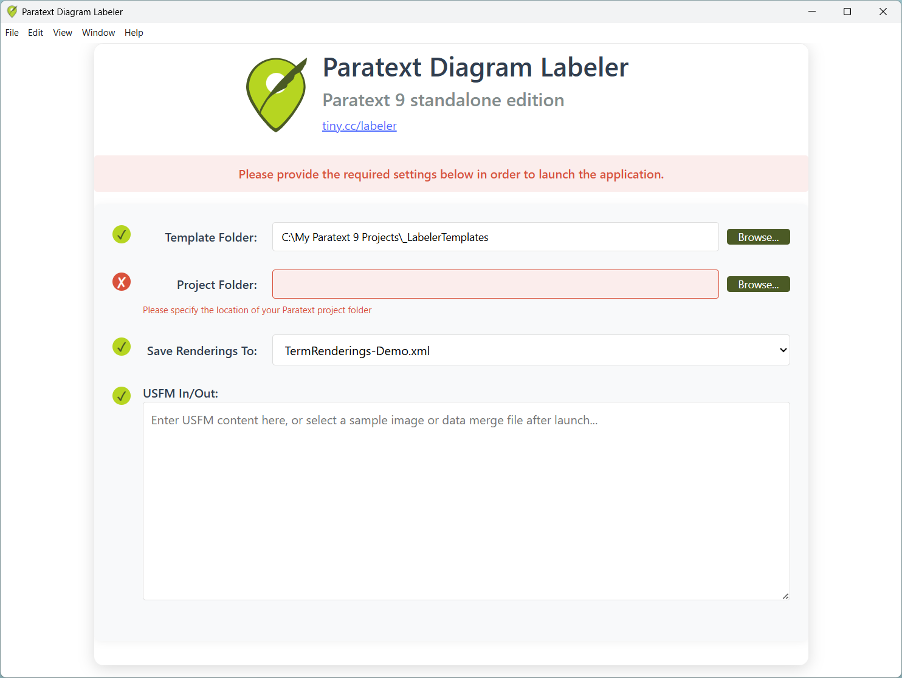
Settings
Template Folder
The installer initially places the
templates folder (
_LabelerTemplates
) in the same folder as the Paratext Diagram Labeler executable. It’s recommended
that you leave it there, so that when you install an updated version, you’ll be able
to immediately use the updated files.
Project Folder
Specify the full path to your Paratext project folder. E.g. “C:\My Paratext 9
Projects\Zezi”.
Save Renderings To
If you don’t want the Labeler to directly modify your
TermsRendering.xml
file (that Paratext uses), select
TermsRenderings-Demo.xml
instead. Once you’re satisfied with the changes to this file, you can replace
your original
TermRenderings.xml
file with it.
USFM In/Out
If you paste a USFM representation of a diagram into this space, Labeler will use it when
launched. Clicking the OK button after Labeler is launched will return the diagram’s
USFM representation. It will persist there for subsequent uses of the Labeler, or you can
copy and paste it into an appropriate location in your Paratext project.
If this area does not contain relevant USFM, you’ll be prompted to browse for a
diagram template when you click the Launch button.
Once these settings provide the necessary context for the Labeler, click the Launch button.
Selecting a Diagram Template
If you click the Launch button with no template specified in the USFM, or if you ever click
the “Browse for map template” button (its icon looks like a yellow file folder),
this will open the system file picker dialog, like this (on Windows machines):
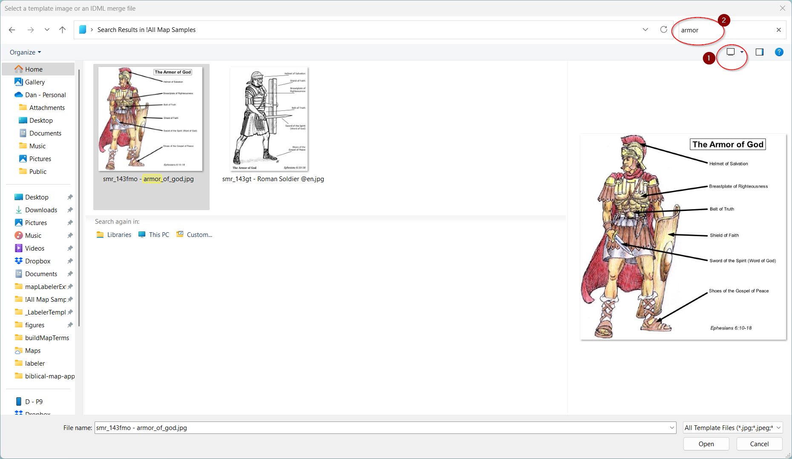
-
It’s recommended that you make this dialog as large as possible, and then choose
“Extra large icons” to display. 1 You may also want to toggle the preview
pane on if it’s hidden, for a closer view of template images.
-
The first time you run Paratext Diagram Labeler, it copies “!All Map Samples” to
your Pictures folder. The advantage of it being there is that it will be indexed. If you
don’t need the Spanish versions, you can delete the
SMR @es
folder.
-
Navigate to that folder.
-
You can browse the images without filtering, but it may be faster to find a suitable map
by using the search bar. In the above example, we searched for armor. 2
If you wanted to see all the samples of black and white maps of Paul’s
third missionary journey, you could use a search for bw AND paul or bw AND act18.
To further restrict the search to only maps
supported by InDesign or Map Creator, add the keyword IDML or MAPX respectively. E.g. “bw AND paul AND mapx”.
All sample maps are also tagged with one of the following searchable
tags that indicate the type of mapː
- BWR: black & white, relief
- BWF: black & white, flat
- BBR: blue & brown, relief
- BBF: blue & brown, flat
- FCR: full color, relief
- FCF: full color, flat
- MCR: muted color, relief
Other example searches:
-
mapx - All Map Creator maps
-
fcr OR bbr - Maps with full color relief OR blue-brown relief versions available
-
bwf idml - Black & White flat maps in IDML format
-
ACT08 - Maps for Acts 8
-
*gt - Greg Thompson maps/diagrams
-
Note that the first time you run this, the operating system may not have had time yet to
index the sample maps, so searching by keyword might not work until your machine has had
enough idle time to finish indexing.
-
While the sample maps folder contains separate images for the different varieties that
one master file can produce, it won’t matter which of these you select to identify
the template.
-
Once you’ve selected the template you want to use, click the
Open
button.
Using the Labeler
You can think of the launched Labeler window as an enhanced version of the familiar
Biblical Terms tool. It is divided into three resizable panes, like this:
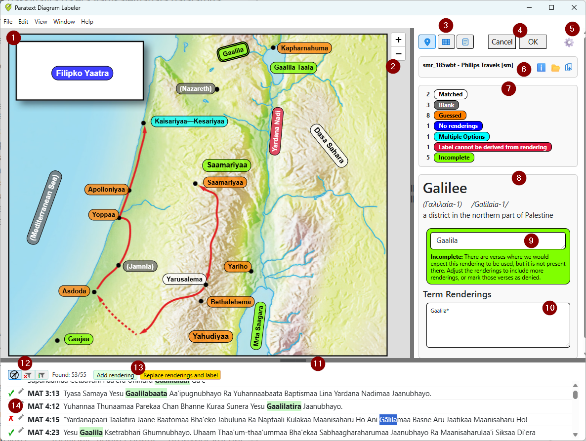
The
main pane
1
is typically used in “map view” to show the labels overlaid on an image.
Each of the labels is color-coded to indicate the kind of attention that the label may need.
Please see the
Label Status
topic below for details. The
zoom buttons
2
enable zooming in and out on the diagram.
In the
details pane
on the right
, the
view buttons
3
enable you to select between “map view”, “table view”, and
“USFM view” to be shown in the main pane.
The
OK
and
Cancel
buttons
4
will return you to the pre-launch screen, with or without updating the USFM
representation there.
The
Settings
cog
5
provides acces to various user-interface settings:
|
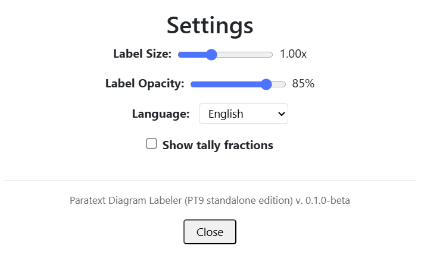
|
Label Size:
Scale the labels to balance readability with space efficiency on your screen.
Label Opacity:
Reduce opacity to see the underlying sample of style that will be applied in Map
Creator / InDesign.
Language:
Select a language for the user interface. (Note that the strings in other languages
are currently just A.I.-translated, not yet human-checked.)
Show tally fractions:
Check this box to display the fraction of found renderings directly on the labels.
|
The
template group
6
displays the name of the current diagram template, and provides buttons for the
following template actions:
-
Template Info
: Display information about the current diagram, including a link to usage and
attribution rules.
-
Browse for Template
: Load a different diagram by browsing either for a template JPG image, or for an IDML
data merge file that you’ve previously saved, as described in the
Selecting a Diagram Template
section above.
-
Export to Data Merge File
: Use this to save your current diagram to a text file for data merge into either
InDesign (IDML) or Map Creator (MAPX) master files. It’s recommended that you save
such files to your project’s
shared\labeler
folder, so that they will be included in Paratext’s send/receive.
The
tally box
7
displays the count of each status of label in the diagram.
The
label group
8
displays:
-
information about the currently selected label, including the major-language gloss, the
source-language Biblical term, and some contextual information to aid in translation.
-
an expandable
vernacular label box
9
in which you can provide or edit the vernacular text for that label, and see a
detailed explanation of that label’s status, in some cases with quick action
buttons.
-
the
term renderings
box
10
, in which you can edit your term renderings. (Note: Term rendering history tracking is
not yet implemented.)
The
bottom pane
11
displays the available S
cripture verses where the term is expected to appear if the translation team has used the
term consistently.
Three
filter buttons
12
control which verses are displayed:
-
Show all verses
: Shows all available verses.
-
Show only verses without matching renderings
: Allows you to focus on just the missing renderings.
-
Show unique forms
: Displays just the first occurrence of each inflected form of the rendering.
If any text in the bottom pane is selected, two additional buttons
13
become available:
-
Add rendering
: Adds the selected text to the term renderings box as a new rendering.
-
Replace renderings and label
: Replaces the contents of both the terms rendering box and the vernacular label box with
the selected text.
There are two buttons at the left edge of each verse in the bottom pane
14
:
-
A green checkmark indicates the term has been found.
-
A red X indicates that the term is missing from this verse. If it’s OK that
it’s missing, click the red X to deny that it’s a problem.
-
A green checkmark with a small red X indicates that you’ve examined the verse and
denied that the missing rendering is the problem.
-
Edit verse
: Click the pencil icon to edit the verse in Paratext. (On Windows, Paratext should
scroll to the selected verse.)
Keyboard Shortcuts
-
PgDn / PgUp will cycle forwards and backwards through the labels.
-
Ctrl + and Ctrl - zoom the scale of all text elements. Ctrl 0 resets this.
-
Ctrl 9 will reset the zoom on the map itself.
Table View
Table View is just like Map View, but with labels provided in a table instead of being
positioned on an image:
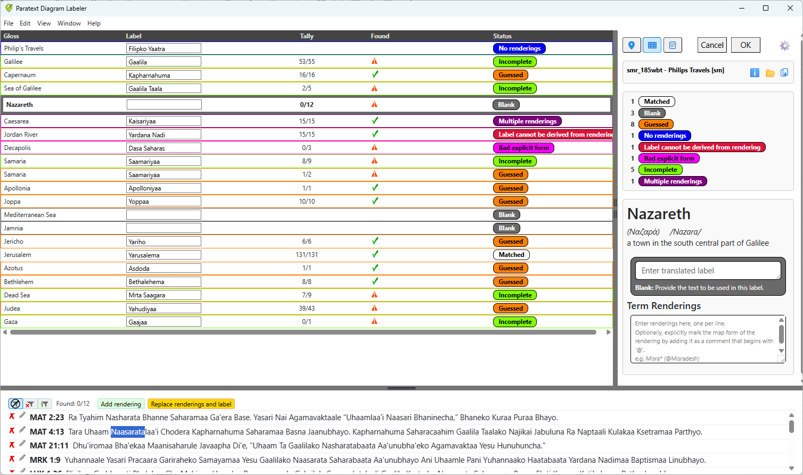
Even if the chosen template is not available on a particular local system, opening a
diagram definition (from an *.idml.txt file or from USFM) is at least editable in Table
View.
USFM View
The USFM view displays how the diagram and its labels might be currently represented in
USFM 3. Please note that this is subject to change, so at the current time, it is
recommended that you save your work by exporting to *.idml.txt files rather than by copying
and pasting USFM text to/from your Paratext project.
Label Status
Here are the different statuses, and the explanation provided to the user for each:
|
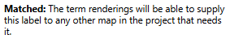

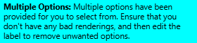
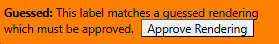
|
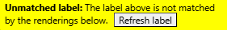
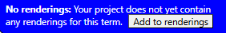
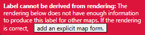
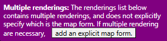
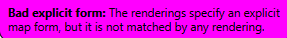
|
Using the Data Merge Files
Once the translation team has generated the data merge files, the typesetter can use these in Map Creator or InDesign to create the actual, formatted, fine-tuned maps. For details, see SIL Map Repository: Instructions for Typesetters (Working with MAPX or IDML Files).
Migrating Data from Scripture Map Labeler
If you’ve created maps already with the current version of Scripture Map Labeler,
those labels will be accessible to you in Paratext Diagram Labeler if you took the step of
ensuring your labels were copied into the term renderings. If you have not done that, the
easiest way to do that now is to use the
Map Labeler Helper’s “Commit Labels” tool.
Feedback
Thank you for your willingness to beta test this software. After installing and using this software, please be sure to complete the
Paratext Diagram Labeler Feedback Form. Report what things you particularly appreciate, what problems you encountered, and what enhancements you would
like to see in the final Paratext 10 version. Also, if you have any suggestions for improving this documentation, please include that in your feedback.